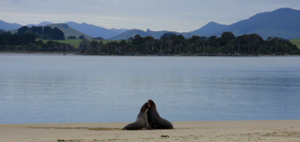
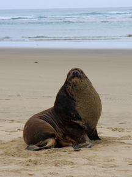

Surat Bay - newhaven

Søløver i brunst
torsdag den 24. januar 2008

Det er tid til at sige farvel til Dunedin, den sidste “storby” i et godt stykke tid. Vi parkerer inde i byen , så jeg kan blive studset (det er kraftigt tiltrængt!) og vi kan få provianteret inden vi tager sydpå til den mest øde del af New Zealand. Vi har besluttet os for en meget lille campingplads helt ude ved vandet i en bugt, der hedder Surat bay, men på vejen vil vi et smut forbi Nugget Point, som skulle være en stor naturoplevelse. Vejen dertil viser sig at være en uasfalteret bjergvej, men vi når frem ved frokost tid, og rigger vores camping grej til, så vi kan få noget frokost. Vi sludrer lidt om makrelmadder, og det hører dem i nabocamperen, som selvfølgelig er fra DK... Vi får os en god sludder og nogle fine råd med på vejen, da de er på vej hjemad og har været hernede et godt stykke tid.
Gåturen ud til fyrtårnet på Nugget Point er rimelig stejl, men meget smuk, og gevinsten får vi i form af en stor koloni af de enorme elefantsøløver, som boltrer sig i vandet. De er langt nede, men vi har da købt os en kikkert i bedste ornitolog stil!
Vi når frem til vores endestation for dagen via yderligere 20 km grusvej. Nu er vi altså virkelig kommet ud på landet. Campingpladsen har plads til 4 campere, og der holder 3 i forvejen, så det var heldigt at vi havde ringet og booket i forvejen.
Her er ret skønt, 3 meter til vandet og en stor græsplæne, hvor pigerne kan lege. Naboerne er fra Køln, de har to drenge på Viola og Stellas alder og vi falder hurtigt i snak. Her er masser af dyr alle vegne, bl.a. den sjældne Kapuki fugl, verdens andenstørste due, en ordentlig kleppert.

Da vi har spist, beslutter vi os for at gå en aftentur ud til stranden. Vi har fået at vide, at der er søløver i brunst, og det må vi ud og se. Vi farer lidt vild, men når frem, og vi bliver ikke skuffede. To kåde søløver er i fuld gang med parringsagten. De slås, skriger, bider hinanden, hopper helt ud af vandet, løber efter hinanden, leger og pjatter, så det er en fornøjelse. Nede på selve stranden ligger der en ordentlig moppedreng af en søløve, og vi møder også en mor med sin unge. På vej tilbage er de to turtelduer stadig i gang. Vi sniger os ret tæt på, og nyder endnu en fantastisk naturoplevelse. Mætte af indtryk tørner vi ind. Gad vide hvad vi skal se i morgen?
/Tim
To søløver i gang med parringsagten. Det står på i timevis. Hannen bliver bidt til blods inden han endelig får lov.
Her er meget stille og gudesmukt.